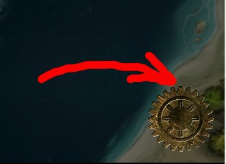
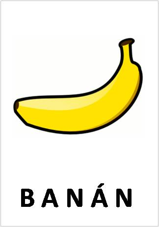
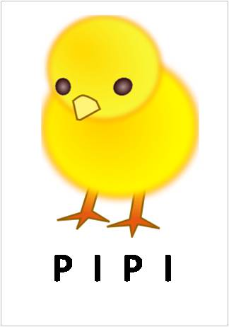
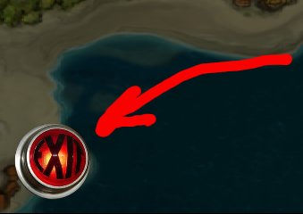

Help
- Menu
-
Hlavní nabídku spustíte přes "pie-gear" menu v pravém dolním rohu. Po najetí kurzoru na jeho oblast se vám zobrazí sada tlačítek.
Tyto tlačítka představují nabídku pro nastavení hry.
-

- Nastavení
-
Nastavení provede te volbou -> ->. Není možné potvrdit volbu ... atd
-

- Povinné pole
-
Aby jste mohli potvrdit nastavení, musíte vypnit povinná pole. Tato poviná pole se při absenci či špatném zadání rozsvítí červeně.
-

- Konec
-
Hru vypnete stisknutím tlačítka "EXIT" v levém dolním rohu, které se po najetí kurzoru červeně rozsvítí
-
